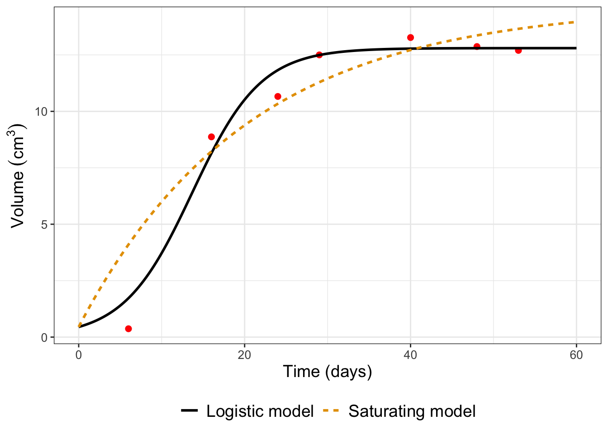
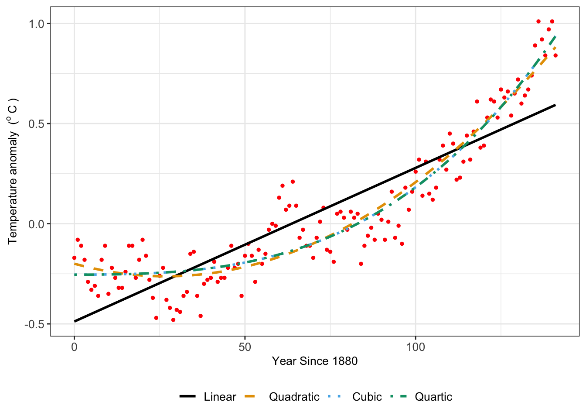

14 Information Criteria
In Exercises 13.5 and 13.6 of Chapter 13 we introduced two different empirical models for fitting the growth of yeast \(V\) over time \(t\). One model is a logistic model (\(\displaystyle V = \frac{K}{1+e^{a-bt}}\)), whereas the second model is a saturating function (\(\displaystyle V= K + Ae^{-bt}\)). A plot comparing MCMC parameter estimates for the two models is shown in Figure 14.1.
Figure 14.1 raises an interesting question. Sometimes we have multiple, convergent models to describe a context or situation. While having these different options is good, we also like to know which is the best model. How would you decide that?
This chapter focuses on objective criteria to assess what is called the best approximating model (Burnham and Anderson 2002). We will explore what are called information criteria, which is developed from statistical theory. Let’s get started!
Note
This chapter uses functions from base R: lm, AIC, and BIC, which ar all part of the stats library. This library should be pre-loaded into R, but if not, can be loaded with library(stats).
14.1 Model assessment guidelines
The first step is to develop some guidelines and metrics for model evaluation. Here would be the start of a list of things to consider, represented as questions:
- The model complexity - how many equations do we have?
- The number of parameters - a few or many?
- Do the model outputs match the data?
- How will model prediction compare to any newly collected measurements?
- Are the trends accurately represented (especially for timeseries data)?
- Is the selected model easy to use, simulate, and forecast?
I may have hinted at some of these guidelines in earlier chapters. These questions are related to one another - and answering these questions (or ranking criteria for them) is at the heart of the topic of model selection.
Perhaps you may be asking, why bother? Aren’t more models better? Let’s talk about a specific example, for which we return to the dataset global_temperature in the demodelr library. Recall this dataset represents the average global temperature anomaly relative to 1951-1980. When we did linear regression with this dataset in Chapter 8 the quadratic and cubic models were approximately the same (Figure 14.2):

The variation in the different model fits for Figure 14.2 shows how different, but similar, the model results can be depending on the choice of regression function. Table 14.1 displays summary results for the log-likelihood and the root mean square error (RMSE).1 In some cases, the log-likelihood decreases (indicating a more likely model), supported by the decrease in the RMSE indicating the fitted model more closely matches the observations. However the decrease in the log-likelihood and the RMSE is changing less as the complexity of the model (i.e. a higher degree polynomial) increases.
| Model | Log-likelihood2 | RMSE |
|---|---|---|
| Linear | 45.04 | 0.176 |
| Quadratic | 103.305 | 0.117 |
| Cubic | 105.788 | 0.115 |
| Quartic | 112.5 | 0.11 |
Further model evaluation can be examined by the following:
- Compare the measured values of \(\vec{y}\) to the modeled values of \(\vec{y}\) in a 1:1 plot. Does \(g\) do a better job predicting \(\vec{y}\) than \(f\)?
- Related to that, compare the likelihood function values of \(f\) and \(g\). We would favor the model that has the lower log-likelihood.
- Compare the number of parameters in each model \(f\) and \(g\). We would favor the model that has the fewest number of parameters.
Given the above question, we can state the model selection problem as the following:
When we have two \(f(\vec{x}, \vec{\alpha})\) and \(g(\vec{x}, \vec{\beta})\) for the data \(\vec{y}\), how would we determine which one (\(f\) or \(g\) or perhaps another alternative model) is the best approximating model?
14.2 Information criteria for assessing competing models
Information criteria evaluate the tradeoff between model complexity (i.e. the number of parameters used) and with the log-likelihood (a measure of how well the model fits the data). There are several types of information criteria, but we are going to focus on two:
- The Akaike Information Criterion (\(AIC\), Akaike (1974)) is the most commonly used information criteria:
\[ AIC = -2 LL_{max} + 2 P \tag{14.1}\]
- An alternative to the \(AIC\) is the Bayesian Information Criterion (\(BIC\), Schwartz (1978))
\[ BIC = -2 LL_{max} + P \ln (N) \tag{14.2}\]
In Equations 14.1 and 14.2, \(N\) is the number of data points, \(P\) is the number of estimated parameters, and \(LL_{max}\) is the log-likelihood for the parameter set that maximized the likelihood function. Equations 14.1 and 14.2 show the dependence on the log-likelihood function and the number of parameters. For both the \(AIC\) and \(BIC\) a lower value of the information criteria indicates greater support for the model from the data.
Notice how easy the \(AIC\) and \(BIC\) are to compute in Equations 14.1 and 14.2 (assuming you have the information at hand). When an empirical model fit is computed (i.e. using the command lm), R computes these easily with the functions AIC or BIC. To apply them you need to first do the model fit (with the function lm. Try this out by running the following code on your own:3:
regression_formula <- temperature_anomaly ~ 1 + year_since_1880
fit <- lm(regression_formula, data = global_temperature)
AIC(fit)
BIC(fit)Table 14.2 compares \(AIC\) and \(BIC\) for the models fitted using the global temperature anomaly dataset:
| Model | \(AIC\) | \(BIC\) |
|---|---|---|
| Linear | -84.08 | -75.213 |
| Quadratic | -198.609 | -186.786 |
| Cubic | -201.576 | -186.797 |
| Quartic | -213 | -195.265 |
Table 14.2 shows that the cubic model is the better approximating model for both the \(AIC\) and the \(BIC\).
14.3 A few cautionary notes
- Information criteria are relative measures. In a study it may be more helpful to report the change in the information criteria, or even a ratio (see Burnham and Anderson (2002) for a detailed analysis).
- Information criteria are not cross-comparable across studies. If you are pulling in a model from another study, it is helpful to re-calculate the information criteria.
- An advantage to the \(BIC\) is that it measures tradeoffs between favoring a model that has the fewer number of data needed to estimate parameters. Other information criteria examine the distribution of the likelihood function and parameters.
The upshot: Information criteria are one piece of evidence to help you to evaluate the best approximating model. You should do additional investigation (parameter evaluation, model-data fits, forecast values) in order to help determine the best model.
14.4 Exercises
Exercise 14.1 You are investigating different models for the growth of a yeast species in a population where \(V\) is the rate of reaction and \(s\) is the added substrate:
\[ \begin{split} \mbox{Model 1: } & V = \frac{V_{max} s}{s+K_{m}} \\ \mbox{Model 2: } & V = \frac{K}{1+e^{-a-bs}} \\ \mbox{Model 3: } & V= K + Ae^{-bs} \end{split} \]
With a dataset of 7 observations you found that the log-likelihood for Model 1 is 26.426, for Model 2 the log-likelihood is is 15.587, and for Model 3 the the log-likelihood is 21.537. Apply the \(AIC\) and the \(BIC\) to evaluate which model is the best approximating model. Be sure to identify the number of estimated parameters for each model.
Exercise 14.2 An equation that relates a consumer’s nutrient content (denoted as \(y\)) to the nutrient content of food (denoted as \(x\)) is given by: \(\displaystyle y = c x^{1/\theta}\), where \(\theta \geq 1\) and \(c\) are parameters. We can apply linear regression to the dataset \((x, \; \ln(y) )\), so the intercept of the linear regression equals \(\ln(c)\) and the slope equals \(1 / \theta\).
- Show that you can write this equation as a linear equation by applying a logarithm to both sides and simplifying.
- With the dataset
phosphorous, take the logarithm of thedaphniavariable and then determine a linear regression fit for your new linear equation. What are the reported values of the slope and intercept from the linear regression, and by association, \(c\) and \(\theta\)? - Apply the function
logLikto report the log-likelihood of the fit. - What are the reported values of the \(AIC\) and the \(BIC\)?
- An alternative linear model is the equation \(y = a + b \sqrt{x}\). Use the R command
sqrt_fit <- lm(daphnia~I(sqrt(algae)),data = phosphorous)to first obtain a fit for this model. Then compute the log-likelihood and the \(AIC\) and the \(BIC\). Of the two models (the log-transformed model and the square root model), which one is the better approximating model?
Exercise 14.3 (Inspired by Burnham and Anderson (2002)) You are tasked with the job of investigating the effect of a pesticide on water quality, in terms of its effects on the health of the plants and fish in the ecosystem. Different models can be created that investigate the effect of the pesticide. Different types of reaction schemes for this system are shown in Figure 3.7, where \(F\) represents the amount of pesticide in the fish, \(W\) the amount of pesticide in the water, and \(S\) the amount of pesticide in the soil. The prime (e.g. \(F'\), \(W'\), and \(S'\)) represent other bound forms of the respective state. In all seven different models can be derived.
These models were applied to a dataset with 36 measurements of the water, fish, and plants. The table for the log-likelihood for each model is shown below:
| Model | 1a | 2a | 2b | 3a | 3b | 4a | 4b |
|---|---|---|---|---|---|---|---|
| Log-likelihood | -90.105 | -71.986 | -56.869 | -31.598 | -31.563 | -8.770 | -14.238 |
- Use Figure 3.7 to identify the number of parameters for each model.
- Apply the \(AIC\) and the \(BIC\) to the data in the above table to determine which is the best approximating model.
Exercise 14.4 Use the information shown in Table 14.1 to compute (by hand) the \(AIC\) and the \(BIC\) for each of the models for the global_temperature dataset (there are 142 observations). Do your results conform to what is presented in Table 14.2? How far off are your results? What would be a plausible explanation for the difference?
Akaike, Hirotugu. 1974. “A New Look at the Statistical Model Identification.” IEEE Transactions on Automatic Control 19 (6): 716–23. https://doi.org/10.1109/TAC.1974.1100705.
Burnham, Kenneth P., and David R. Anderson. 2002. Model Selection and Multimodel Inference. New York, NY: Springer New York.
Gause, G. F. 1932. “Experimental Studies on the Struggle for Existence: I. Mixed Population of Two Species of Yeast.” Journal of Experimental Biology 9 (4): 389–402.
Schwartz, G. 1978. “Estimating the Dimensions of a Model.” Annals of Statistics 6 (2): 461–64.
The root mean square error is the computed as \(\displaystyle \sqrt{\frac{\sum (y_{i}-f(x_{i}))^{2}}{N}}\).↩︎
Remember, log-likelihoods can be positive or negative; see Chapter 9.↩︎
You can compute the log-likelihood with the function
logLik(fit), wherefitis the result of your linear model fits.↩︎